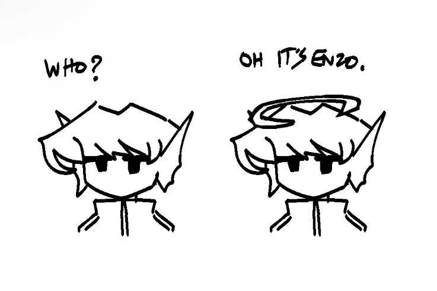
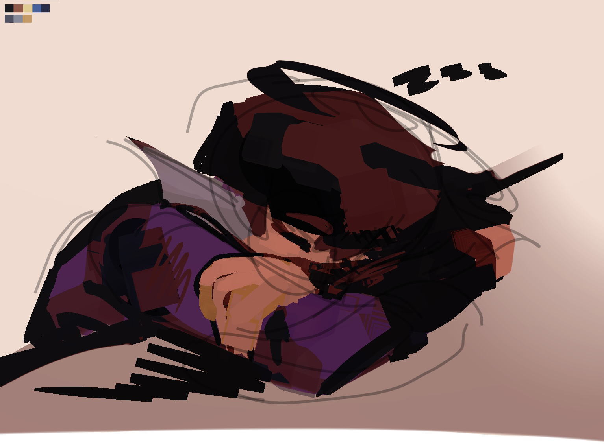
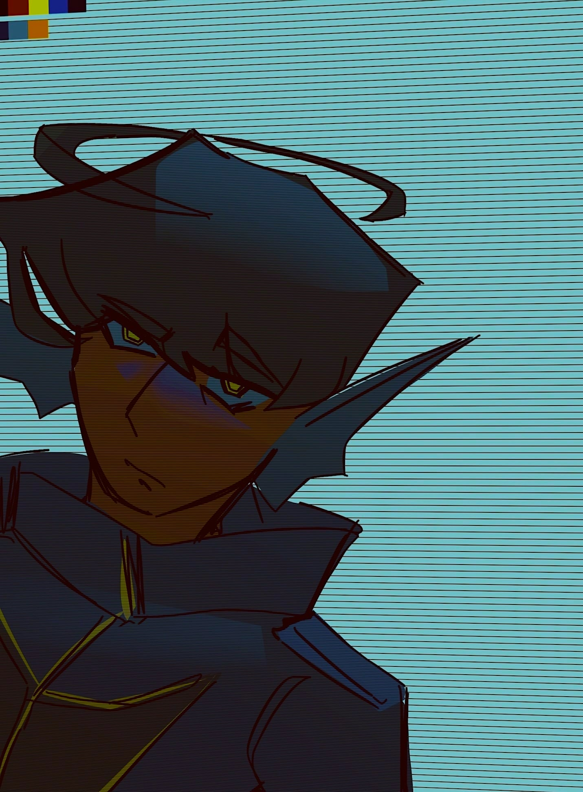
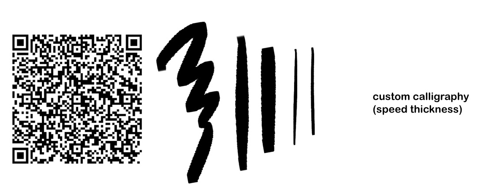
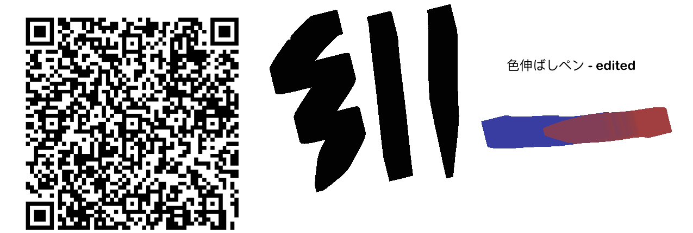

misc doodledump
creation date: jan 30-mar 5
you know who it is.
i drew these at various points in between winter break's end and spring break's beginning. the first drawing was a doodle from my class notes that i colored digitally, and the one below i drew immediatley after finishing my last final. fitting visual.

overall i don't have much to say about these. they were stress relievers in between schoolwork and so are rly sloppy and not too visually *there.* heres one of trinity.

i fucking LOVE my brushes i love them SO MUCH RAHHH  
anyhow, i've drawn a bit more than this but i refrain from sharing them for now. most of them are reference sheets for projects new and old, and so it feels odd to dump all of them in a post uncategorized. thinking of making an actual page to briefly showcase all my ocs and their refs. someday soon.
gahhh these past few months in particular have been p slow for polished artworks, i feel kinda sad abt it,, the consistency in which motivation hits will continue to be scattered ig. mostly, i feel insane.